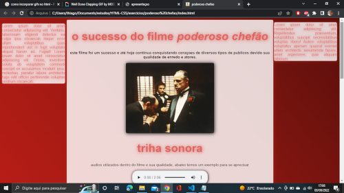
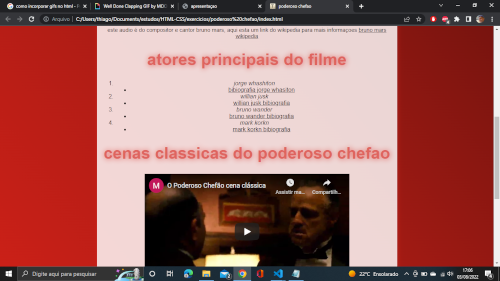
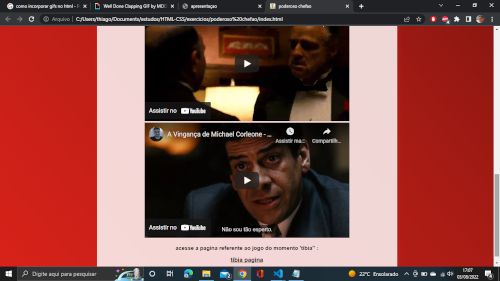
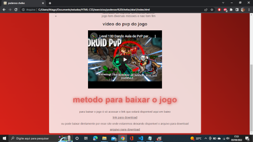
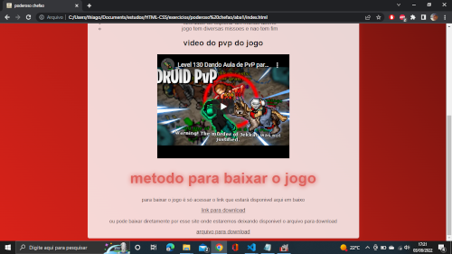

um pouco sobre mim
ferramentas:
possuo conhecimento em HTML:5 e CSS e estou estudando JAVASCRIPT
projetos
além desse projeto de apresentaçao do meu perfil tenho outro projeto que simula um blog onde possui duas paginas no site, a pagina principal é um blog sobre o filme poderoso chefão, deixarei um print da pagina da pagina princial em seguida da pagina secundaria, que é apresentação de um jogo de computador chamado tibia
este print é sobre a pagina principal do site,a na qual coloquei audios, introduzi video diretamento do youtube, estilizei com css com cores harmonicas e que diferem com o conteudo da pagina e outras informaçoes :
  os proximos prints é a segunda pagina deste site, o conteudo é totalmente diferente mas mudei drasticamente o conteúdo para testar meus conhecimentos.
 

funçoes executadas neste projeto
utilizei funçoes do html e css tais como: centralizaçao de textos e imagens, cores escolhidas de maneira harmonica, sombreamento de textos e imagens, links para redirecionamento externo, incorporaçoes de videos diretamente do youtube, links para dowload, adição de audios e etc..
entao é isso
espero que se agradem desse breve resumo dos meus conhecimentos e me convidem para uma reuniao 😅😅